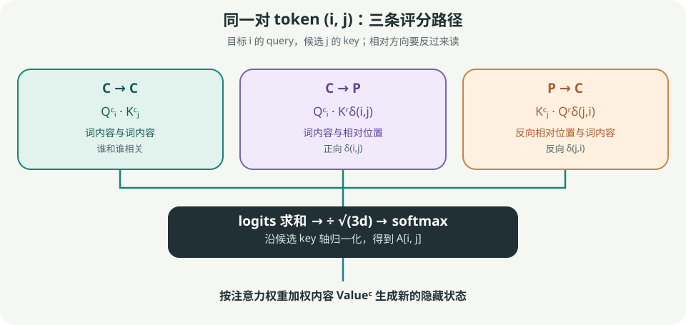

1. 词的“是什么”与“在哪里”是两种信号
比较两段短语：deep learning 与 learning deep。词的集合相同，但位置关系与句法结构发生了变化。普通 BERT 的输入层使用 token、position、segment embedding 的相加；之后 Q/K 是混合表示的投影，语义与位置信号在矩阵乘法中交织。
DeBERTa（He et al., ICLR 2021）以词内容向量与相对位置向量分别构造注意力分数，不是声称现实语言中词义与位置相互独立。一个 token 的表示仍然在每层上下文传播；“解耦”指注意力评分项的参数化路径可分开推导与分析。
我们把位置 i 作为 query、位置 j 作为 key：query 的内容认为 key 的内容有多相关，是第一种关系；query 内容与 key 的相对位置信息如何匹配，是第二种关系；query 的位置关系如何评价 key 的内容，是第三种关系。
2. 三个分数都在最终 softmax 之前相加
用 C→C 表示 content-to-content，C→P 表示 content-to-position，P→C 表示 position-to-content。三项全部贡献未归一化的 logit。它们不是分别做三次 softmax 再平均注意力矩阵，更不是一个局部注意力分支和一个全局注意力分支。

一般的内容 self-attention 只计算 Qᶜᵢ ⋅ Kᶜⱼ。如果只再加 content-to-position 项，表示“i 处的内容如何看待 j 的相对位置”；再加入 position-to-content，则表示“i 的相对位置角色如何看待 j 的内容”。这两个方向不一定相等，尤其当方向编码带符号时。
原则上内容/位置二元分解还存在第四项 P→P。但 DeBERTa 原论文 §3.1 指出在使用相对位置表示时该项提供的额外信息有限，主实现删除它。因此不能画成论文默认四项相加，更不能直接把所有后续实现中的可选 P2P 开关当作原论文固定结构。
3. 逐项展开论文 Equation (4)
设序列长 T，单头维度 d，相对距离表截断范围 k。内容表示 H ∈ R[T,d] 经过内容投影得到 Qᶜ、Kᶜ、Vᶜ ∈ R[T,d]；相对位置表 P ∈ R[2k,d] 分别投影得到 Qʳ、Kʳ ∈ R[2k,d]。对于位置对 (i,j)，相对距离索引记为 δ(i,j)，它将有符号距离截断并偏移到合法表索引。
点号代表向量点积。关键是第三项使用反方向索引 δ(j,i)；如果把它机械地改为 δ(i,j)，除非位置映射恰好对称，否则你构造的模型就不是论文 Equation (4) 中的关系。注意 logits 组成一个 T×T 矩阵，padding/结构 mask 在 softmax 时约束可访问的 key 位置。
论文主三项配置使用 √(3d) 缩放，与只有一项点积的常规 √d 不同。真实代码可能根据启用的评分项数量动态计算 scale_factor；不能在禁用某项时仍无条件沿用三项缩放。多头情况将每个头独立计算后再合并，输出仍保留 [B,T,H] 的序列表示。
4. “前后”不只是距离的绝对值
论文定义距离表索引 δ(i,j)，从位置 i 到 j 使用 i−j（再按 k 截断与偏移）。当 i=2,j=4，它对应 -2；反方向 δ(j,i) 对应 +2。符号决定方向，与“距离都是 2”不同。代码中的相对位置建立函数及 gather 索引必须和这一约定一致。
同样值得注意：DeBERTa 主要使用相对位置编码来定义注意力对之间的关系，不是把每个绝对位置先加到内容词向量上再套一个普通 QKᵀ。相对位置可以裁剪到规定范围；超出窗口的距离在一个相对位置桶中合并，并不意味着模型在计算图中自动变成局部稀疏注意力。
5. 为什么有了相对位置，还需要 Enhanced Mask Decoder
解耦注意力主要处理内容及相对位置信号，却不直接在每层输入内容中叠加绝对位置 embedding。对 MLM 来说，某些任务需要显式知道“这处 mask 位于整个序列的哪里”。原论文引入 enhanced mask decoder（EMD），在预测被遮盖 token 的解码阶段引入绝对位置信息。
这个 decoder 是为 MLM 预测增设的位置敏感路径，和 Seq2Seq 的自回归生成 decoder 不是一回事；不能因为名字有 decoder 就宣称 DeBERTa 整体是 Encoder-Decoder 模型。原论文还讨论 fine-tuning 时的 virtual adversarial training。这与解耦注意力、EMD 分属不同设计层次，不能把所有增益全部归给三项注意力。
下游分类或抽取任务需要检查实际 checkpoint/模型版本是否保留相应预训练 head。DeBERTa-v3 后来引入了不同的预训练优化方案，不可把其训练目标反投射到 2020/2021 原始 DeBERTa 的 MLM 目标上。
6. 如何读论文中的性能表格
论文提供多种大小的 DeBERTa 实验，并对位置/内容通道与 EMD 做消融。讨论原论文性能时必须明确是 DeBERTa-base/large，是否采用额外微调策略，是什么任务、数据集版本、切分与指标。比如 SQuAD 2.0 有 EM 与 F1 两个常见指标，不能拿一个模型的 F1 和另一个模型的 EM 做直接胜负。
同样不要把“相对位置”自动当作长文本算法：普通密集注意力仍需要构造随 T² 增长的 token-pair 分数。相对位置表大小可以与 T 独立，但不是 T² 分数矩阵的替代品。若要处理长文档，需要另行考虑稀疏注意力、分块、显存和 checkpoint 的最大长度配置。
7. 交互：一个位置对，三个分数代表什么
固定 query i=2，改变 key j
这是符号与访问方向检查，不是权重实测；不以任意玩具数值冒充真实 attention score。
query i=2 → key j=4：有符号距离 i−j = −2。
C→C：Qᶜ₂ · Kᶜ₄
C→P：Qᶜ₂ · Kʳ_{δ(2,4)} （负方向）
P→C：Kᶜ₄ · Qʳ_{δ(4,2)} （正方向）
三个 logit 加和，再按 √(3d) 缩放、沿 key 轴 softmax。8. 实现时的形状/标签/版本检查
使用最短序列打印三项分数的形状，应均为 [B,heads,T,T]；随后检查总 logits 与基于相同 mask 的 softmax，逐 query 行概率应对合法 key 求和为 1。再对固定 i,j 测试相对距离反向索引是否镜像，不能只检查绝对值。最后验证 EMD 输入含绝对位置而普通 encoder 注意力没有被无意改回 BERT 式位置混合。
若引用官方 disentangled_attention.py，应注意部分版本暴露 c2p、p2c、可选 p2p 开关。论文的默认三项计算和可配置代码分支应分开描述，避免把所有模型版本混为一谈。
关键结论
- DeBERTa 的解耦注意力主式包含 C→C、C→P、P→C；P→P 在原论文主实现中省略。
- P→C 的相对方向使用 δ(j,i)，与 C→P 的 δ(i,j) 相反；三项加和后按 √(3d) 缩放再 softmax。
- EMD 在 MLM 解码时引入绝对位置；原始 DeBERTa 的预训练/微调技巧不能与之后的 v2/v3 全部混同。
原始论文与官方代码
- He et al., DeBERTa: Decoding-enhanced BERT with Disentangled Attention，§3.1 Equation (3)、(4)，§3.2 EMD，§4 与消融。
- Microsoft Research, 官方 disentangled_attention.py（c2p/p2c 索引与可选 p2p 分支）。
- DeBERTa 官方仓库（模型与版本说明）。